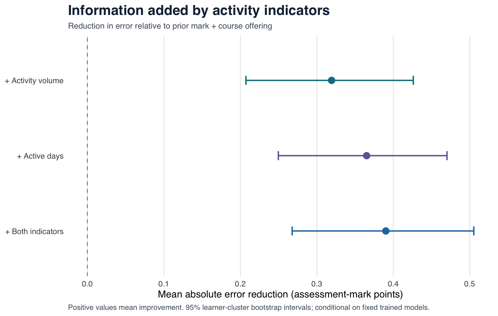

Two questions about the same metric
A digital count can help a learner notice activity and plan what to do next. Once a system awards points for particular actions, however, increasing that count may become an attractive goal in its own right. The psychological question is whether the scoring rule redirects practice choices—and whether that change supports the learner’s educational goal.
This project separates what an indicator tells us from what displaying and rewarding it makes people do. The completed analysis addresses the first question. The proposed experiment addresses the second.
Does giving another point for a correctly repeated question change the first practice choice, compared with giving a point only when a distinct item is first answered correctly?
Repetition is not inherently wasteful. It could consolidate knowledge, provide reassurance, or offer an efficient way to earn points. Practice choices, reported goal endorsement, enjoyment, and independent assessment performance therefore need separate measures.
What the completed analysis establishes
The Open University Learning Analytics Dataset supplies historical activity and assessment records from 2013–2014. I compared fixed, interpretable models using prior assessed performance and course context, with learners separated between development and evaluation. The analysis includes six planned sensitivity comparisons, learner-cluster uncertainty, and an independent reconstruction of 32 reported MAEs.
Eligible course enrollments across 19 offerings
Reserved evaluation enrollments with observed marks
Mark-point reduction in prediction error after adding click volume

The reference model’s mean absolute error was 11.621 mark points, compared with 11.302 after adding click volume. The primary reduction was 0.319 points, with a 95% learner-cluster bootstrap interval of 0.207–0.426. Secondary comparisons are shown separately.
Recorded activity adds modest predictive information for the specified later coursework mark. This is a prediction result, not a learning gain or a dashboard effect. The dataset records neither dashboard exposure nor motivation. Missing marks, offline study, course context, and unknown grade-release dates limit interpretation.
The psychological argument
The proposed account is that a visible score supplies a proximal objective: people may select actions that efficiently increase it, even when their stated goal is to learn. That possibility is distinct from feedback helping people judge progress or feel competent. A change in choice alone does not establish that learning has been displaced.
Existing experiments on personal quantification distinguish recorded output from enjoyment and subsequent engagement. Research on logged streaks likewise shows why the record itself can acquire motivational value. The proposed study uses a narrower contrast between two transparent repeat-credit policies, with learning assessed outside the point system.
The theory and measurement note specifies competing explanations and the limits of this contrast. Its predictions are proposals; the OULAD result does not confirm them.
A complete proposed experimental contrast
Both conditions use the same original lesson on interpreting counts and rates, the same questions and explanations, and the same learning goal. Only the point rule differs. A shared warm-up supplies a correctly answered item before randomization, so everyone begins with the same repeat option.
| Action | All-correct credit | Distinct-item credit |
|---|---|---|
| First correct answer to an item | +1 point | +1 point |
| Further correct answer to that same item | +1 point | +0 points |
| Incorrect answer or explanation view | +0 points | +0 points |
- Baseline questions, a common lesson, and a guided warm-up.
- Random assignment, an accurate rule explanation, and a comprehension check.
- Eight minutes to repeat a correctly answered item, try a new problem, or review an explanation.
- Unfamiliar application questions outside the practice-point system.
- Exploratory questions about goals and experience, followed by a debrief.
The primary behavioral outcome records whether the first menu selection is a previously correct item for repetition. Confirmed no-choice sessions remain a visible category. Withdrawal and technical loss remain missing. Independent assessment performance is a separate secondary outcome; custom motivation questions are exploratory and do not establish a causal mechanism.
The walkthrough is a development demonstration, not recruitment. It sends no responses to a research server. Any analysis examples use explicitly simulated records and test the implementation rather than the hypothesis.
Study materials and review status
- Protocol, outcomes, sampling rationale, and analysis decisions
- Original item bank, answer keys, and measurement rationale
- Consent and debrief drafts
- Package guide, event documentation, and reproduction instructions
The original assessment items need piloting for clarity and difficulty. A future participant study needs a suitable research review and recruitment pathway. The protocol is locally dated and has not been externally preregistered; no participant data have been collected for it.
This independent portfolio project was developed with AI assistance in research, drafting, implementation, and checking. Author review and independent methods comprehension remain part of preparing the work for PhD applications. The public repository preserves the analysis decisions, code, aggregate results, and proposed study materials.
OULAD is credited to Kuzilek, Hlosta, and Zdrahal and distributed under CC BY 4.0. Source records and fitted models are excluded from the portfolio repository. Official dataset and attribution.